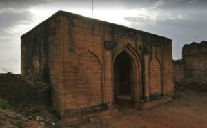
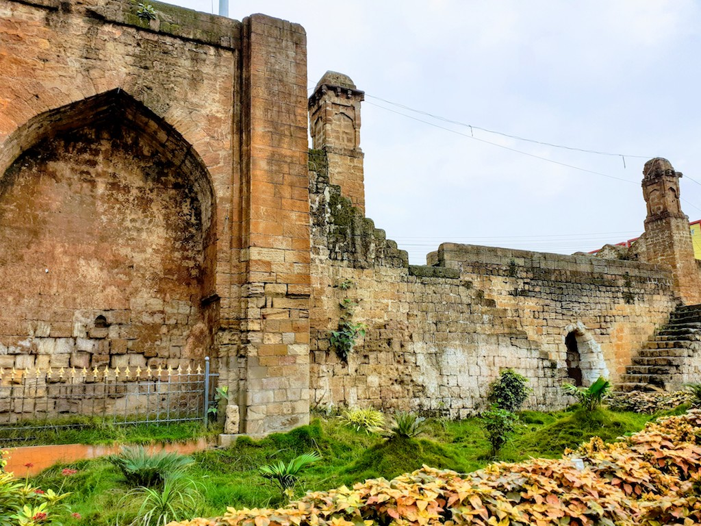

Manikgarh Fort

Manikgad / (also called Gadchandur) (Marathi: माणिकगड / गडचांदूर) is an ancient fort in Chandrapur district, Maharashtra. It is a hill fort 507 metres above sea level built by the Naga kings in 9 CE. The fort is in ruins and is frequented by wild animals that live in the vicinity, such as panthers and boars. Several monuments of historical importance are nearby.
History Of Manikgarh
Manikgad was built by the last Mana Naga King - Gahilu. The Mana Nagas settled in this area around 9 CE. Initially, the fort was named Manikagad after the patron deity of the Mana Nagas - Manikadevi - but later on this was shortened to Manikgad. Local legend holds that the fort was built by a Gond king named Mankyal (hence the name Manikgad). However, the lintel of the entrance gate has a Naga image carved in relief and not the Gond emblem of a lion and an elephant. So this legend is likely not true.
Features of the Fort
The fort was built of large black stones and was a formidable defence in its time. Barricade walls of the fort enclose a valley that has ruins of old buildings and storehouses. The outlines of the fort are visible against the rampart walls. The southern part of the fort, along with its supporting wall, collapsed. There lies a cannon in the valley below that was likely mounted on that bastion that is destroyed. Unlike a cast-iron cannon, this cannon is made of several iron straps welded together. The gateway of the fort is intact. The Queen’s palace is situated near a small dam with steps and a few bathing rooms. Two wooden pagodas were constructed by the Forest Department. The fort area is filled with shrubs and trees.
Ballarpur Fort

During 1437-62 AD, Ballalpur was the capital of the Gond King Khandakya Ballalshah. The fort that was built here on the eastern bank of the Wardha River is square in shape with walls and bastions. There are still two gates that are intact and are set at a right angle to each other. There is also a small rear gate on the riverside.
History of Ballarpur Fort
Gond King Khandkya Ballal Sah, who succeeded to the throne of Ser Sah, his father. discovered a pond with miraculous waters which healed his boils and tumors. It was called Akaleshwar Tirth. The town flourished around the fort as Ballarpur or the city of Ballal. He also founded Chandrapur city.
For many years Ballarpur was the seat of the kingdom, a regal city, and in the vestiges of the stronghold and its royal residence still holds the commemorations of its significant past. The city of Chandrapur was established later. The last Gond king Nilkantha Sah died in imprisonment at Ballarpur.
Features of Ballarpur Fort
The fort was built of large black stones and was an intimidating shield during those times. The fort is rectangular in shape with the main entrance facing the east side. On the eastern bank of the Wardha, the land fort built here is a class with walls and towers. There are two intact doors set on each other’s right angle. There is also a small entrance on the edge of the river. The walls of the fort are still intact, but all the old buildings are in total ruins. Many parts of this pillar are still safe inside the earth. There are undiscovered tunnels in the fort walls.
Anchleshwar Fort

The capital was shifted from Ballalpur to Chandrapur later and the Ballal kings built an extensive fort with high walls and projections. The fort had four impressive gates at four cardinal points. The original buildings are not there anymore but the gates and a portion of the wall still exists. Chandrapur was annexed by Raghuji Bhosale of Nagpur in the middle of the 18th century. Finally, the fort was captured by the Britishers in 1818 AD.
History of Chandrapur Fort
After the death of Gond king Surja alias Ser Sah, his son Khandkya Ballal got here to the throne.
Constructed by Khandkya Ballal Sah in the 13th century, Chandrapur Fort is the oldest architecture
in
Chandrapur located at the confluence of Irai and Zarpat rivers. Jatpura Gate, Bagad Khidki,
Anchaleshwar
Gate, Hanuman Khidki, Pathanpura Gate, Vithoba Khidki, Binba Gate, and Chor Khidki are the 8 entry
gates
of the fort.
Later a tomb was constructed for King Vir Shah, by his queen Rani Hirai as an ode of her love for
him
which is possibly the only tomb of love built by a wife for her husband. Probably this is the rarest
tomb built by a wife to her husband. Chandrapur has many Stone Age sites as well. Many stone-age
tools
have been found in the district, which has been displayed in a Rock Museum. A few signs of pottery
making, suggest that the Chandrapur area was habited during the Neolithic times.
Chandrapur has been ruled by many rulers including the Maurya Empire, Shunga Empire Satavahana
Empire
Vakataka, the Kalachuri dynasty, the Rashtrakuta dynasty, the Chalukya dynasty Yadava dynasty of
Devagiri which developed a mixed culture in the place.